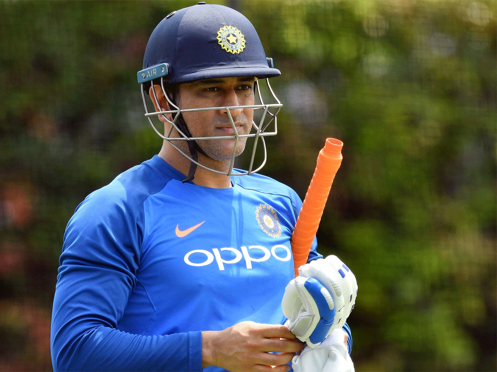
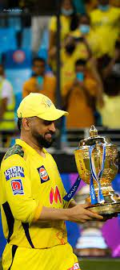
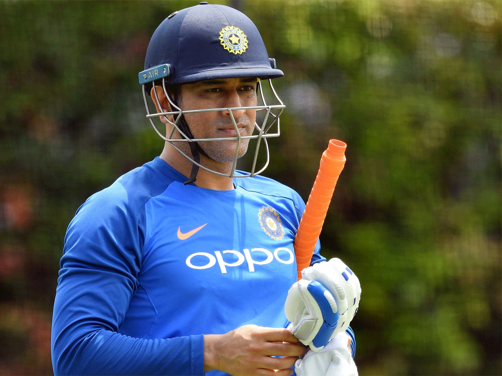
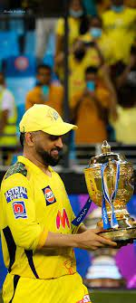

M.S. Dhoni, in full Mahendra Singh Dhoni, (born July 7, 1981, Ranchi, Bihar [now Jharkhand] state, India), Indian cricketer whose rise to prominence in the early 21st century culminated in his captaincy of the Indian national team that won the one-day Cricket World Cup in 2011. Dhoni made his international debut in 2004.
His talent with the bat came to the fore in an innings of 148 runs against Pakistan in his fifth international match. Within a year he joined the India Test team, where he quickly established himself with a century (100 or more runs in a single innings) against Pakistan. Despite his inexperience, Dhoni took over the captaincy of the one-day side in 2007 and led India to the Twenty20 (T20) world title. Series wins over Australia and Sri Lanka, among others, moved India to the top of the International Cricket Council (ICC) Test rankings for the first time in December 2009.
Dhoni was honoured for his play with the ICC One Day International Player of the Year Award in 2008 and 2009. In the 2011 one-day World Cup, Dhoni’s dashing innings of 91 not out—in front of a home crowd in Mumbai—paved the way for India’s victory over Sri Lanka in the final. He also led India to an appearance in the semifinals of the 2015 Cricket World Cup. Dhoni stopped serving as India’s captain in 2017, having led his country in 331 international matches, the most for a captain in the sport’s history. Three years later he retired from international competition. Cricket bat and ball. cricket sport of cricket.Homepage blog 2011, arts and entertainment, history and society, sports and games athletics Britannica Quiz.
 


